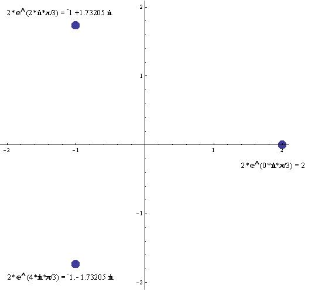

Jenny solves the equation x3 = 8/Chapter 8
Jenny had solved quadratic equations at least 6 ways (see her on video doing one with Don). When he asked her to solve x3 = 8, she did this, not surprisingly:
Jenny solved for x: x = 8/x2 , then used Mathematica to iterate the right side.
g[x_]:=8/x2
N[NestList[g,5,10],10] (start with 5, do 10 iterations)
{5.000000000,
0.3200000000, 78.12500000,
0.001310720000, 4.656612873×106,
3.689348815×10-13, 5.877471754×1025,
2.315841785×10-51, 1.491668146×10102,
3.595386270×10-204, 6.188692095×10407}
...->0 ...-> +¥
0.32 is the result of the 1st iteration, and the 10th iteration is 6.188...×10407 . So the odd iteration numbers form an infinite sequence that converges to 0 and the even iteration numbers form an infinite sequence that diverges to +¥. None of us had seen anything like this!
We then solved the equation x3 = 8 in Mathematica
NSolve[x^3Š8,x]
{{x®-1.-1.73205 ä},{x®-1.+1.73205 ä},{x®2.}}
or in terms of ã
N[2*ã^(4*ä*p/3) ] = -1.-1.73205 ä
N[2*ã^(2*ä*p/3) ] = -1.+1.73205 ä
N[2*ã^(0*ä*p/3) ] = 2.
Then Don showed them how to plot the three roots of 8 in the complex plane using Mathematica:
ListPlot[Map[{Re[#],Im[#]}&,x/.Solve[x3==8]],PlotRange®2.1,AspectRatio®Automatic,
PlotStyle®PointSize[0.03]]

This started some nice discussions with Jenny and John, also a 6th grader, about e and i and ( Sqrt 3)*i . Can you predict, as John did, the roots of the equation x3 = 125 ? See ch. 11 to graph i in the Argand plane and the possibility of e to imaginary powers.
Also see graphs of complex numbers, and iii...